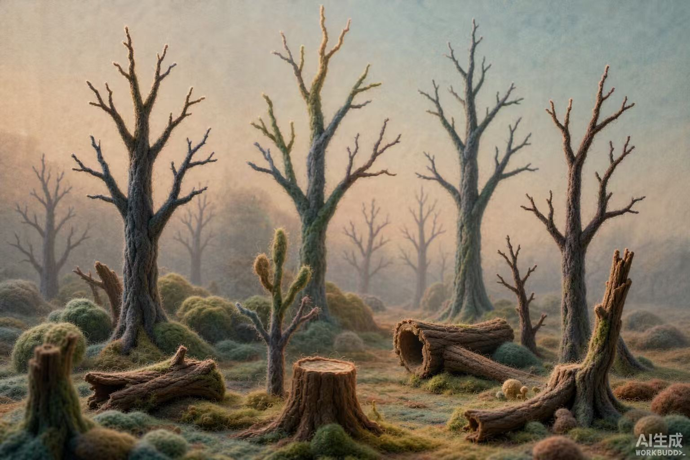
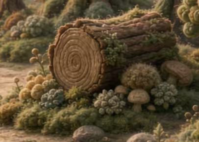
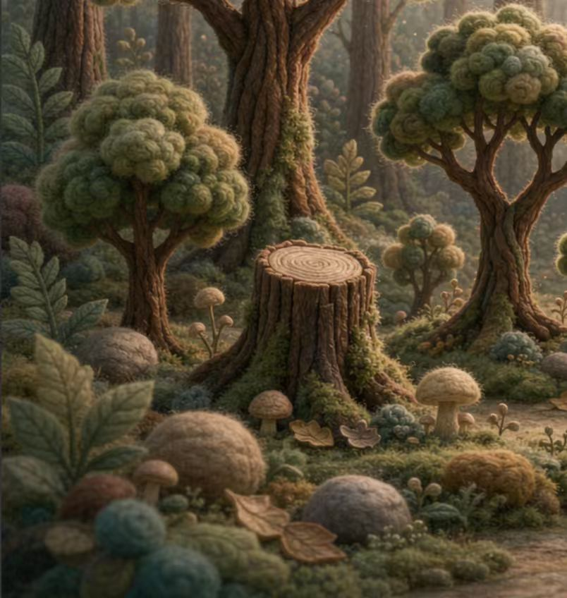
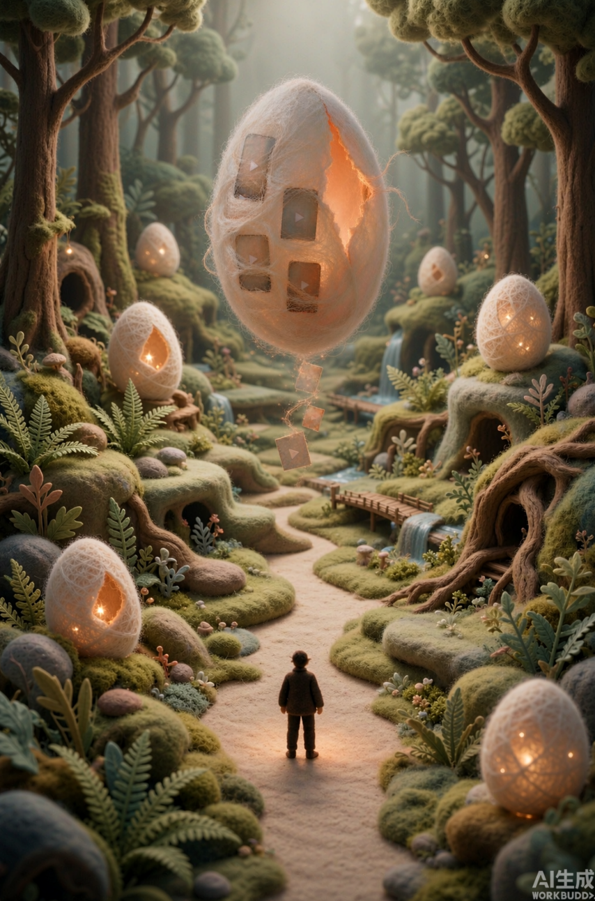
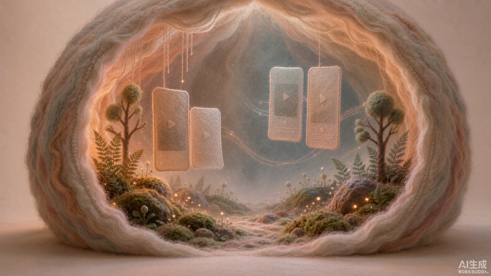

高粗糙度的羊毛与苔藓；少量凹凸与局部毛束塑造触感，避免整片光滑球体。
01 / REVISED 3D STUDY
先核对角色和内部视角
角色可切换正、侧、背面；茧房内部可拖动环顾。这里仍是代码生成的小样，正式 GLB 网格、骨骼和动作尚未制作。
刺猬 · 用户选定的上一版
3D 造型小样 · 非正式模型
拖动旋转 · 滚轮缩放
无法启动 WebGL。仍可查看右侧参考图、下方美术标准与资源清单。
已恢复你选择的上一版 3D 造型；三视图仍是后续正式模型的细节参考。
三视图是角色质量标准代码小样即使已有绒毛与刺，也尚未达到三视图的精细度。正式网格须按正、侧、背三个角度逐项校对。
新室内图是视角标准原室内参考从茧房外部看进去；新版目标图和 3D 小样都从茧房内部观察，不把剖面图当作玩家视角。
02 / MATERIAL & LIGHT
统一的森林语言
颜色作为共同基底，内容差异主要发生在房间内部。森林外部保留足够明度，让路径、入口和刺猬一眼可辨。
深林绿
#334A3F苔藓绿
#788968树皮褐
#85654A羊毛白
#E6D5B8茧内暖光
#D99766前景苔团、可走的土径、被雾轻轻淡化的远树；暖侧光描边，暗部仍留细节。
灌木和纤维不能挡住刺猬、门牌或进入路线。信息面板近景时，背景为面板留出安静区域。
02B / EXTERIOR SHAPE SOURCES
三种木质承托，一种共同的茧房入口
先确定形体体系；三个示例房间以后再按内容配置颜色、道具与声音。人物和内容标签暂不固定。




03 / FIRST PERSON INTERIOR
进入茧内：被算法包裹的温柔牢笼
相机站在房间内部，视线先经过可行走的发光苔藓路径，再落到中央柔光数据面板。原参考只保留材质和空间边缘的提示作用。
毛毡褶皱从四周延伸到头顶，柔软地围住玩家；镜头可抬头环顾。
一块主面板内组织用户画像标签、推荐算法节点和信息流卡片；正式内容与链接后续提供。
地面有微缩森林，中央留出通道；细小的蓝、橙、红信息光带向远处蜿蜒。
暖米色为底，蓝橙红渐变作为信息氛围；不同房间仍可按内容变换声光。

原图是从外部看入茧房的概念，继续用于纤维质感参考，不再作为玩家进入后的镜头。04 / ASSET STATUS
哪些已经有，哪些还要做
这张表把参考图、网页小样和正式 3D 资源分开，便于决定下一阶段的制作范围。
| 对象 | 已入库 | 正式模型状态 | 阶段 2 交付重点 |
|---|---|---|---|
| 刺猬 | 正侧背三视图；3D 小样 | 未制作 GLB | 轮廓校对、毛刺层次、配饰、待机和行走动作 |
| 森林与地面 | 树、树桩、倒木、苔藓、路径图片 | 未制作 GLB | 可行走土径、绒团植被、雾中层次和近景材质 |
| 茧房外壳 | 森林茧房图片；3D 小样 | 未制作 GLB | 木质承托、编织椭圆茧、入口与茧丝开门部件 |
| 茧房内部 | 新增室内图片；3D 小样 | 未制作 GLB | 椭圆纤维腔室、中央通道、微景观、悬挂面板 |
| 蘑菇 | 针毡蘑菇图片；3D 小样 | 未制作 GLB | 单支与簇生变化、柔软菌帽和细长菌柄 |
| 标签和数据 | 字段方向已确定 | 等待后续提供 | 在室内与门牌保留配置入口，不写死示例值 |
外部形态建议：用树洞、树桩或倒木承托发光编织茧，入口像树洞且由茧丝围出。这样保留之前确定的森林树洞，也吸收新参考里的椭圆茧。若想统一为纯树洞或纯编织茧，请在确认本页时指出。
05 / APPROVAL POINTS
请按这四点判断
确认或指出需要改的部分即可。正式标签、人物资料与数据页地址可以继续后置。
刺猬的比例与细节
已恢复你选择的上一版刺猬；可对照三视图继续指出未来精细模型应保留的特征。
茧房的外部形态
树洞／倒木承托＋发光编织茧是否符合预期？入口是否仍像一扇能打开的门？
室内的真正视角
进入后环顾穹顶、中央主面板、苔藓地面和信息光带是否符合你描述的“温柔牢笼”？
材质、光与画面明度
针毡触感与暖米色底、蓝橙红渐变光是否协调？还需哪些具体调整？
已采用你选定的组合
打开阶段 2 可玩验收页上一版刺猬和新版茧内视角已进入阶段 2 可玩场景；请在新页面验收森林探索与镜头转场。